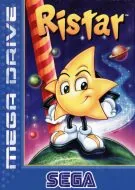
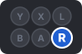
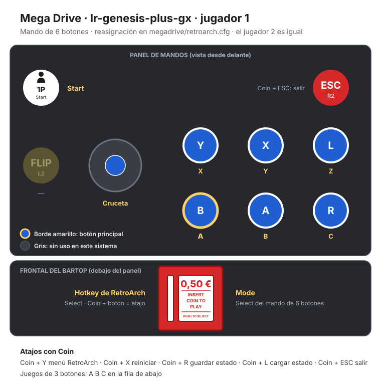
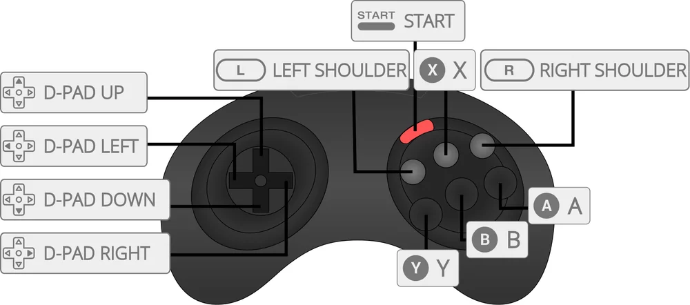

Mega Drive
Ristar
- Año: 1995
- Desarrollador: Sega
- Género: Plataformas / Acción
Plataformas de Sega (1995): Ristar, el joven hijo del héroe del sistema Valdi, viaja de planeta en planeta para liberar a sus líderes del pirata Greedy y rescatar a su padre. Usa sus brazos elásticos para agarrar, columpiarse y golpear.
Controles
Mando de Mega Drive: A B C abajo y, en los juegos de 6 botones, X Y Z arriba. Es el reparto general de la Mega Drive en esta máquina.
| Panel | Juego |
|---|---|
 | A |
 | B |
 | C |
 | X (solo juegos de 6 botones) |
 | Y (solo juegos de 6 botones) |
 | Z (solo juegos de 6 botones) |
 | Start |
 + +  | Salir del juego |
El panel en Mega Drive




🔎 Dudas para mirar jugando (1)
Datos de la guía que las fuentes no aclaran: si los compruebas en la bartop, apúntalo en las pruebas.
- ⚠️ Los ambientes son orientativos, por el nombre de cada planeta y el vídeo.
Argumento
En una galaxia lejana, el pirata espacial Kaiser Greedy ha controlado con la mente a los líderes de los planetas del sistema Valdi para que le obedezcan. En la versión occidental, la de la bartop, también ha raptado al padre de Ristar, un héroe legendario: una estrella fugaz que protege la constelación. Ristar sale a rescatarle y a liberar los planetas.
El sistema Valdi llevaba un milenio en paz. Greedy quiere convertirlo en el cuartel de su ejército, y hasta el héroe legendario del sistema, el padre de Ristar, ha caído prisionero. Cuando el planeta Neer (Flora) pide ayuda desesperadamente, responde Ristar, joven e inexperto pero valiente, para liberar uno a uno a los líderes y capturar a Greedy.
Final: en la versión occidental, Ristar se reencuentra con su padre. (En la japonesa, Greedy y dos secuaces acaban abandonados en un planeta desierto mirando una imagen de Ristar.)
Fuentes
Wikipedia · descripción de la ficha (gamelist)
Jugabilidad
- Tipo de juego: plataformas de Sega (1995), para un jugador. Seis planetas de tres fases; la primera y la tercera acaban con jefe (salvo el último planeta). Seis planetas con jefe y el jefe final (ver «Guía de niveles»).
- Salto: no salta tan alto como otros personajes del género, pero se mantiene más tiempo en el aire.
- Brazos elásticos: en ocho direcciones (hacia abajo, solo en el aire). Mientras se mantiene el botón, no suelta lo agarrado. Agarrándose una y otra vez puede escalar paredes, aunque cuesta práctica. Ristar agarra a los enemigos y tira de sí mismo para darles un cabezazo. También abre cofres, tira árboles y coge o lanza objetos.
- Columpiarse: en barras para cruzar huecos o subir y bajar, y en enemigos y objetos en el aire.
- Asas de estrella: Ristar da vueltas de 360° y sale disparado al soltarse. Con bastante impulso hace el Meteor Strike: invencible y acaba con lo que toca.
- Meteor Strike: la velocidad se controla girando el joystick; Ristar rebota en las paredes y cuesta dirigirlo (en los modos Hard y Super no se puede controlar). Al perder velocidad, cae y deja de ser inmune.
- Final de fase: en los actos 1 y 2, un asa especial lanza a Ristar fuera; cuanto más alto, más puntos.
- Vida: cuatro estrellas arriba a la derecha. La estrella amarilla (dorada) recupera una y la azul (plateada), todas; salen de cofres y se cogen con las manos. Una figura de Ristar da una vida.
Fuentes
Guía de niveles
Lo marcado con ⚠️ no está probado en la bartop.
| Ronda | Planeta | Ambiente |
|---|---|---|
| 1 | Flora | Selva |
| 2 | Undertow | Agua |
| 3 | Scorch | Fuego |
| 4 | Sonata | Música |
| 5 | Freon | Hielo |
| 6 | Automaton | Máquinas |
| Final | | Kaiser Greedy |
- Cada ronda acaba con un jefe (según los capítulos del vídeo de «Vídeos»).
- ⚠️ Los ambientes son orientativos, por el nombre de cada planeta y el vídeo.
Fuentes
LongplayArchive · descripción de la ficha (gamelist)
Objetos
| Objeto | Qué hace |
|---|---|
| Estrella amarilla | Recupera una estrella de vida |
| Estrella azul | Recupera las cuatro |
| Figura de Ristar | Vida extra |
| Cofres | Se abren con un cabezazo y tienen objetos |
Fuentes
Trucos y secretos
Lo marcado con ⚠️ no está probado en la bartop.
Secretos
- Fases de bonificación: cada fase tiene un asa escondida que lleva a una fase con obstáculos y tiempo límite. Si se acaba rápido, se gana una continuación.
- Códigos: al acabar el juego se dan códigos de ayuda o de modos especiales según cuántos tesoros de las fases de bonificación se hayan conseguido (las últimas son muy difíciles). ⚠️ No he encontrado la lista.
Fuentes
Longplay

Partida completa de la versión Mega Drive (1 h 14 min), de LongplayArchive: Longplay of Ristar.
Pulsa el minuto de un nivel para ver el vídeo desde ese punto.